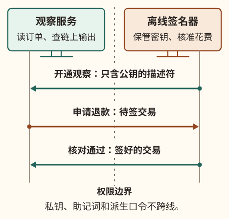

本页目录
如果你记得上节课的“私钥签名，公钥验签”，手边又有一个终端，就可以开始。不需要装节点，也不需要 BTC。本课用 BIP84 公开测试向量：连对应的私钥都能被任何人算出来。绝不要往这些地址转账，也不要拿自己的助记词做实验。
第二张单，要走哪个岔口？
旧系统把同一账户的收款地址依次发给订单。它从 0 开始编号，所以第一张单用索引 0，第二张用索引 1。像看 orders.get(1) 一样，先别把 1 当成第一张。不过地址比数组下标多一个岔口：要先选收款还是找零，再选第几个。

图里的公共起点是 m/84'/0'/0'。从 m（整棵密钥树的根）出发，84' 选本课的 Bitcoin 单签收款方式，接下来的 0' 选 Bitcoin 主网币种，最后的 0' 选账户 0。账户往后，/0 是对外收款，/1 是留给自己的找零。于是第二张单的完整路径是 m/84'/0'/0'/0/1。这些编号是这家钱包采用的约定，不是说所有钱包的第二张订单都一定用这条路径。
按图找到位置，再用下面的完整测试向量对单。图里节选的前后缀只用来认路，不能用来验收。
| 用途 | 账户之后的路径 | 规范给出的完整地址 |
|---|---|---|
| 第一张收款单 | /0/0 |
bc1qcr8te4kr609gcawutmrza0j4xv80jy8z306fyu |
| 第二张收款单 | /0/1 |
bc1qnjg0jd8228aq7egyzacy8cys3knf9xvrerkf9g |
| 第一笔找零 | /1/0 |
bc1q8c6fshw2dlwun7ekn9qwf37cu2rn755upcp6el |
假设迁机日志写着 branch=0, index=0，旧订单记录写着 branch=0, index=1。新机器一直在算第一张单。保留旧记录，用 (0, 1) 重算；如果地址与第二行整串相同，这张单的地址就找回来了。该改的是重算时传入的索引，不是订单里的地址。
那第三行是什么订单？不是订单。打个比方（金额示意，并非链上交易）：钱包用一笔 50,000 sat 的旧输出付款，给供应商 36,000 sat，付手续费 500 sat。剩下 50,000 − 36,000 − 500 = 13,500 sat 还给自己，这叫找零。sat（聪）是 Bitcoin 的最小记账单位。若钱包给这笔找零用了 /1/0，对账时就该把它记作自己的零钱，不能当成另一位客户付了 13,500 sat。
没把私钥给新机器，它怎么算出同一地址？
先看签名器这边。拿到备份时，你看到的是排好顺序的 12 个词，叫助记词。本例用英语词表：按 BIP39，每个词代表 11 位，12 × 11 = 132 位里有 128 位初始随机数、4 位校验信息。程序把这串词和当初的派生口令（本例为空）交给 PBKDF2-HMAC-SHA512，算 2,048 轮，得到 64 字节的种子。
“种子”这个名字很贴切：同一种子，沿同一路径，就长出同一把子私钥和对应公钥。这叫分层确定性钱包（HD 钱包）。备份帮你找回的是钥匙，不是把 BTC 从备份里复制出来。哪些输出还没花，要去账本上看。
假如词句全对，但你给原本的空口令多打了一个字符呢？运算照样会交回 64 字节，不会提示“密码错误”。你用它走 /0/1 仍能得到一个格式正确的地址，却不是旧单的那个。词句校验不校验口令。 这时要由持有人在受控的离线环境里对照旧地址核实，不是让值班同事收集词句、口令反复试。这里的口令也不是设备 PIN 或钱包文件的解锁密码。
再看收款机。它不需要种子。签名器可以交给它账户的扩展公钥：按 BIP32，这里面有公钥和 32 字节的派生参数（链码），没有私钥。路径中带 ' 的是硬化步骤，仅有上一级扩展公钥走不过去。但给收款机的这份材料已经到了最后一个 0'，它只需再走 /0/1。这两层没有硬化，所以它能算出第二张订单的子公钥；一串普通公钥或收款地址就办不到。
两台机器现在手里有同一个子公钥。它们对 33 字节压缩公钥先算 SHA-256，再算 RIPEMD-160，得到相同的 20 字节哈希。本例的付款条件写成 00 14 加这 20 字节：见证版本 0，0x14 表示后面有 20 字节，一共 22 字节。这是 BIP84 用的 P2WPKH（原生隔离见证公钥哈希）输出脚本；主网地址则把版本和哈希用 Bech32 编码给人传递。两边能写出相同的付款条件，不等于两边都能签名满足它。
动手：从两个起点，核对同一张订单
实验文件是 wallet.py。从项目根目录开始，用 macOS/Linux 的 Bash 或 Zsh、CPython 3.11（参考版本 3.11.8）。先联网准备环境：标准库 venv 隔离安装，pip 可能从 PyPI 下载 embit==0.8.0 及构建依赖。库负责派生和地址编码。请留在同一个终端里跑后续命令。
cd labs
python3.11 --version
WALLET_ENV=$(mktemp -d)
python3.11 -m venv "$WALLET_ENV"
"$WALLET_ENV/bin/python" -m pip install 'embit==0.8.0'
"$WALLET_ENV/bin/python" -c 'from importlib.metadata import version; print(version("embit"))'
最后一行应是 0.8.0。现在可以断网，留在 labs/ 跑以下两条。first 和 second 选择代码里的两张公开样本订单。脚本不读标准输入或钱包文件，不连节点、不广播；“主网”只是编码这些样本地址时用的网络参数。
"$WALLET_ENV/bin/python" wallet.py first
"$WALLET_ENV/bin/python" wallet.py second
两次的预期输出依次如下：
path=m/84'/0'/0'/0/0
address=bc1qcr8te4kr609gcawutmrza0j4xv80jy8z306fyu
watch_only_matches=True
receipt_matches=True
path=m/84'/0'/0'/0/1
address=bc1qnjg0jd8228aq7egyzacy8cys3knf9xvrerkf9g
watch_only_matches=True
receipt_matches=True
把 second 的输出拿到代码旁边，从最后两行倒着读：
receipt_matches=True：receipt == address。左边是老订单上事先存下的字符串，右边是这次从根走完整路径算的。没有拿新计算结果去填“标准答案”。watch_only_matches=True：watch_address == address。address的起点是mnemonic_to_seed(..., password="")得到的种子，经过HDKey.from_seed、root.derive(path)取到子公钥。watch_address的起点则是 BIP84 另外公布的账户扩展公钥PUBLIC_ACCOUNT_ZPUB；HDKey.from_base58(...)读入它，derive([branch, index])只走[0, 1]。两边最后都用script.p2wpkh(...).address(NETWORKS["main"])编码。
只有两个比较都为真，脚本才退出 0。这里把两个起点放进同一个进程，方便离线交叉检查；实际的观察服务不应该装入签名材料。程序不打印种子或私钥。
两边都同意，为什么还得停？
回到第一张收款单：保持旧单上的地址不动，保持索引 0 不动，只错选成找零分支 1。可以先遮住输出猜一下：哪一项比较会变？跑内置的 wrong-branch，然后立刻读退出码：
"$WALLET_ENV/bin/python" wallet.py wrong-branch
echo "exit=$?"
path=m/84'/0'/0'/1/0
address=bc1q8c6fshw2dlwun7ekn9qwf37cu2rn755upcp6el
watch_only_matches=True
receipt_matches=False
exit=1
这个 exit=1 是我们要找的错：从种子出发、从扩展公钥出发，都走了 /1/0，两边确实算出了同一个地址。可旧订单要的是 /0/0。遇到这样的输出，先用旧单核对网络、脚本类型、账户、分支和索引，别覆盖旧地址。这些都对，仍复现不了地址，再请持有人离线核对词序和原口令。
同一个地址，为什么还不能点“已付”？
设有一张演练单，应收 30,000 sat。两项比较都为真。客服说：“那我发货了？”先想想刚跑的程序：网线拔掉也能变成两个 True，客户一分钱没付也一样。此时只能在交接单上写“收款地址复现成功”。
再给一个输入：假设观察服务已在正确链上找到一笔付给这个脚本的输出，已达到店铺要求的确认数，但金额只有 24,000 sat，本单没有别的入账。对的是地址，差的是钱：30,000 − 24,000 = 6,000 sat。这张单记“部分到账”，不按全款发货。如果以后要退回这笔钱，能读到 24,000 sat 的机器也不能直接动它。下图是岗位分工示意，不是刚才脚本执行过的转账。


图里第一次交接的可以是只含公钥的描述符。比如 wpkh(账户扩展公钥/0/*)（结构示意，不是可导入的文本）：wpkh 选脚本，/0/* 让观察服务按索引列出收款脚本，再去节点查账。看找零则另配 /1/*。这是扫描规则，不是权限开关：拿到账户级扩展公钥的人也能算它下面的未硬化找零分支。只需看收款时，可以交更窄的收款分支级公开材料。即使不能签名，这些材料也能关联多笔收款，不要贴进公开工单。
退款属于图里的另一次交接。观察服务能准备交易；签名器上的授权人要独立核对目的地址、金额、找零和费用，决定签不签。含私钥的描述符与仅含公钥的描述符不能混发：在本课的单签条件下，对应私钥就能授权花费。多签钱包则要看具体需要哪几把钥匙。签名器的助记词、原派生口令和私钥都不交给观察服务。
迁机排障：看得见第 20 张，怎么漏了第 21 张？
再接一张工单（纸上演练，不是 wallet.py 的第四个参数）。旧库保留着第 21 张收款单的完整地址，路径末尾是 /0/20。新节点已同步，新服务也配了正确的收款描述符，却只扫描 /0/0 到 /0/19，含首尾。值班同事看见“扫描完成，没找到”，提议导入整套私钥。
先数一数：19 − 0 + 1 = 20，这批检查了 20 个地址，一次都没有检查索引 20。不换种子、不请签名器，把收款分支的上界至少扩到 20。先用公开材料算出 /0/20 和旧单整串比；对上之后，再让节点或索引器从该单可能收款之前重扫相应历史。仅让服务从现在起监听新块，会漏掉以前的付款。扫到匹配的输出，就核对金额、确认情况后更新订单；没扫到就记“在已检查范围内未找到”，不能把“地址对上了”当成收据。
所以迁机时要分开留两份东西：钱包的观察配置（网络、脚本、分支、索引和历史起点），以及业务库的“订单号 → 收款地址”记录。种子能重算钥匙，不能告诉你哪位客户下了哪一单。假如移交方只给一个 BTC 地址，你只能查那个付款目标，没法从中列出相邻订单或恢复签名能力。
那只给一个 EVM 地址呢？普通外部账户（EOA）的地址是 0x 加 40 个十六进制字符，表示 20 字节。它不包含链 ID、派生路径或私钥。把这个地址交给财务，可以约定在哪条链查账，不能让财务替账户签名。要恢复 EOA 的签名能力，持有人得有原私钥或能还原它的备份及解锁条件；合约账户由合约逻辑控制，更不存在“这个合约地址的私钥”。别把一个地址当成 BTC 描述符，更别把两者当成签名器备份。
独立作业：给恢复工单划出验收线
移交单写着：“观察服务重装后，只导入了收款分支。第二张收款单能对上，第一笔找零不在报表里。请把助记词发给值班工程师。”请写一张不含秘密的处置单：
- 在本地留下工具版本、
second与wrong-branch的实际路径、完整公开样本地址、两个比较结果及退出码。每次运行后立刻用echo $?取退出码。不要交终端历史、完整描述符或恢复材料。 - 写下你拒绝交付什么、准备给观察服务补什么、从哪里重扫。如果需求从“查报表”变成“签退款”，改交谁处理？单个 EVM 或 BTC 地址为何不够？
对答案： 第二单应走 /0/1，退出 0；负例应走 /1/0，两路同意但旧单不认，退出 1。补报表靠的是找零分支的公开脚本、足够的索引范围和对应的历史扫描，不是私钥。财务若要退款，交给有授权的签名器核对并签名；地址匹配既不是签名权，也不是付款凭证。学完下一课，再把这个判断带到卷末验收：接手一张异常付款工单。
可对照的规范
- BIP39：助记词与可选口令 和 BIP32：树、链码与硬化边界。
- BIP84：路径、P2WPKH 与本课三个地址的原始测试向量。
- BIP380：输出脚本描述符的脚本表达式和密钥表达式；Ethereum 官方：外部账户与合约账户。
- embit 0.8.0 发布页列出安装包与实现后端。本实验只使用这个版本的库，不使用在线派生工具。